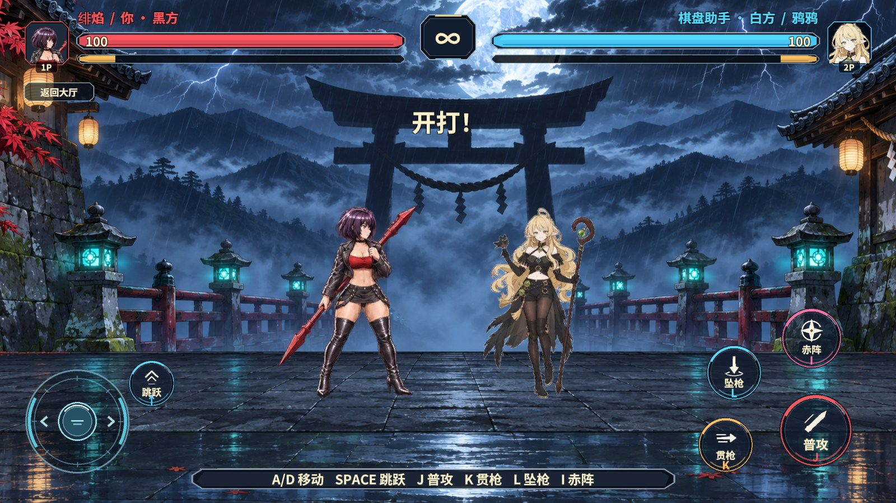
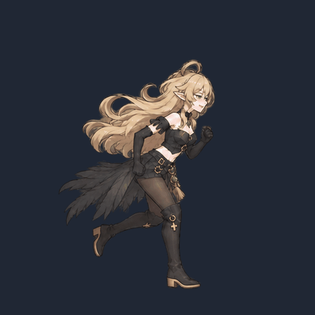
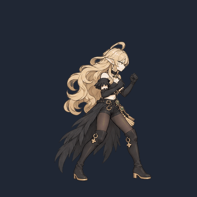
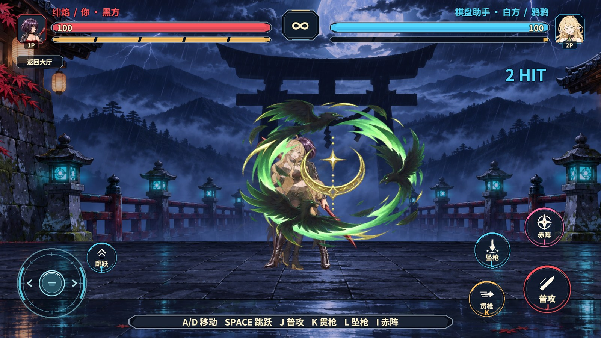
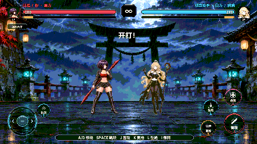

白方鸦鸦
本地人机决斗由绯焰对阵鸦鸦。鸦鸦的待机沿用用户指定原画。移动的八张角色图和跑动头像使用 02 号半垂眉眼与微笑，腿法使用 23 号的专注表情。动作稿保留膝部靴口、原版金环挂坠和金边粗跟。素材目录与生成提示词


腿法和鸦术
J 连段依次为压重心低扫、提膝前弹踢、转髋高位回旋踢。动作第三张对齐已确认的命中年龄，收腿后回到格斗架势。白方 K 释放鸦袭、L 释放掠羽、I 释放鸦宴。鸦袭沿弧线前飞，掠羽从高处下扑，鸦宴展开翠羽和金色月阵。


实际验收
| 检查 | 结果 |
|---|---|
| 场景、图集与 Shader | RevCLI 的 game.pvp.duel-sprites 为既有场景绑定两席角色，game.pvp.duel-atlas 核对 22 个片段的切片及接触下标。Windows 目标的内置 Sprite Atlas V2 有 121 张 Sprite、3 页。白方两层特效使用同一份 Shader 材质。 |
| 原生命中与实际落屏 | 用临时本地探针经现有权威封帧提交白方输入。观察到六次命中及各自的第三张图。六种出招和六段起手音效均触发，黑方 100 血降到 3 血。冷启动和退出重进均通过。 |
| 正式人机回归 | 移除临时探针后，黑方的摇杆换向、松手及连续普攻通过原有回归。白方正式 AI 出招，捕获掠羽和鸦宴。运行时新增错误计数为 0。 |
| 最终移动表情 | 换图后重打图集，从大厅重新进入本地决斗。观察到实际移动切片 Yaya_Run_01 和 02 号头像同时落屏，退出并停止 Play，运行时错误计数为 0。 |
Unity 2022.3.15f1c1 Windows Editor 使用真实 AB 模式。从 rev_discover 查找入口，使用 rev_call editor.play 启动，再通过 rev_run 进入本地人机决斗。六式测试用 围棋对战/暂停决斗敌人AI 参数 1 隔离输入，结尾回大厅并停止 Play。

Revolution 支撑了现有场景流程、音量控制与自动化验收。特效和表情从原生只读快照取动作、位置与命中。联机、独立 Player 和手机尚未进行本轮实测。